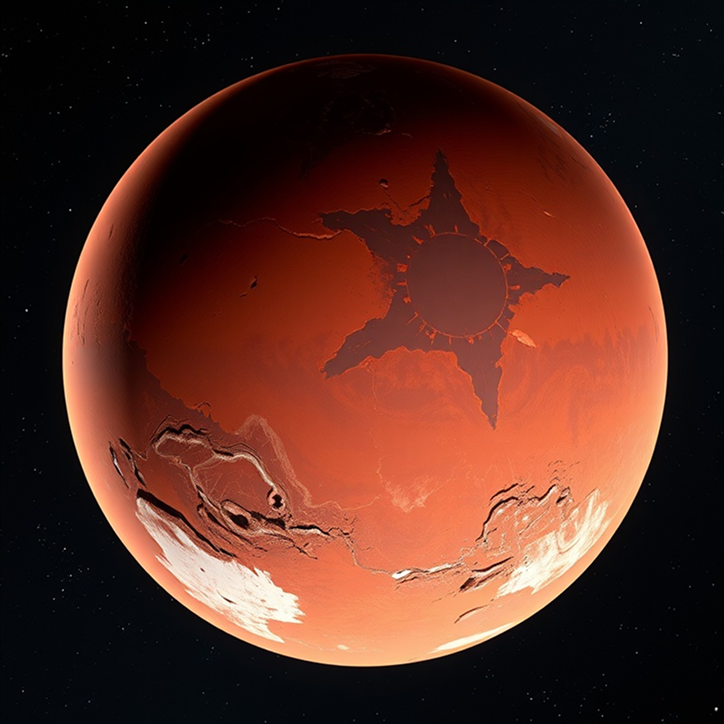

The fourth planet from the Sun and Earth's closest neighbor,
Mars has captivated human imagination for centuries.

The Red Planet
Mars is often called the "Red Planet" due to the iron
oxide prevalent on its surface, giving it a reddish
appearance. Mars is a terrestrial planet with a thin
atmosphere, with surface features reminiscent of both the
impact craters of the Moon and the valleys, deserts and
polar ice caps of Earth.
Mars has two moons, Phobos and Deimos, which are small and
irregularly shaped. These may be captured asteroids
similar to 5261 Eureka, a Mars trojan.
Distance from Sun227.9M km
Gravity3.72 m/s²
Martian Day24.6 Hours
Martian Year687 Days
Temperature
Average -60°C (-80°F), with extremes from -125°C (-195°F)
to 20°C (70°F) at the equator during summer.
Atmosphere
Thin atmosphere composed of 95% carbon dioxide, 3%
nitrogen, 1.6% argon, and traces of oxygen and water.
Geography
Home to Olympus Mons, the largest volcano in the solar
system, and Valles Marineris, a vast canyon system.
Water
Evidence suggests Mars once had significant liquid water
on its surface, with potential subsurface water ice today.
MARS MISSIONS TIMELINE
Humanity's journey to understand and explore the Red Planet
spans decades of scientific achievement.
1965
Mariner 4
First successful Mars flyby, capturing the first close-up
images of another planet from deep space.
1976
Viking 1 & 2
First successful Mars landers, conducting experiments to
search for evidence of life.
1997
Mars Pathfinder
Delivered the Sojourner rover, the first wheeled vehicle to
operate on another planet.
2004
Spirit & Opportunity
Twin rovers that significantly expanded our understanding of
Mars' geology and water history.
2012
Curiosity Rover
Car-sized rover equipped with laboratory instruments to
analyze Martian soil and atmosphere.
Future Mars Exploration
Advanced Propulsion
Development of nuclear thermal and plasma propulsion to
reduce travel time to Mars from months to weeks.
Habitat Construction
Research into 3D-printed habitats using Martian regolith and
underground structures to shield from radiation.
Terraforming Studies
Theoretical research into the possibility of transforming
Mars' environment to be more Earth-like over centuries.
VIRTUAL TOUR
Explore the most fascinating locations on the Martian surface
through our interactive virtual tour.
Compatible with most VR headsets and desktop browsers
MAKING MARS HOME
Our comprehensive plan for establishing the first permanent
human settlement on the Red Planet.
Habitats
Modular, pressurized habitats with radiation shielding,
utilizing both prefabricated components and 3D-printed
structures using local materials.
Underground construction for radiation protection
Self-healing materials for micrometeorite impacts
Expandable architecture for colony growth
Agriculture
Sustainable food production systems using hydroponics,
aeroponics, and controlled environment agriculture to
provide fresh food for colonists.
LED lighting optimized for plant growth
Closed-loop water and nutrient recycling
Genetically optimized crops for Mars conditions
Energy
Multi-source power generation combining solar arrays,
nuclear fission, and advanced battery storage to ensure
reliable energy in all conditions.
Dust-resistant solar panel technology
Small modular nuclear reactors
Grid-scale solid-state battery storage
Transportation
A fleet of vehicles designed for the Martian environment,
from pressurized rovers for long-distance exploration to
autonomous drones for aerial surveys.
Pressurized long-range exploration vehicles
Autonomous construction and mining robots
Specialized drones for Martian atmosphere
Colonization Timeline
Phase 1: 2030–2035
Initial robotic missions to establish infrastructure
Deployment of power generation systems
First crewed mission (temporary stay)
Construction of initial habitat modules
Phase 2: 2035–2045
Establishment of permanent base
Expansion of agricultural systems
Development of in-situ resource utilization
First children born on Mars
Phase 3: 2045–2060
Self-sustaining colony of 1,000+ people
Development of Martian industries
Multiple settlement locations
Initial atmospheric modification experiments
JOIN THE MISSION
Be part of humanity's greatest adventure as we take our first
steps toward becoming a multi-planetary species.
Subscribe for Updates
Stay informed about the latest developments in our Mars
mission planning, technology breakthroughs, and opportunities
to get involved.
Submit Successfully!
Community Programs
Mars Ambassador Program
Join our network of passionate advocates who help
educate the public about Mars exploration and
colonization.
Citizen Science Projects
Contribute to real Mars research by analyzing data,
identifying surface features, or participating in
simulation studies.
Mars Academy
Online courses covering everything from Martian
geology to life support systems and colonization
strategies.
Career Opportunities
We're building a diverse team of experts across multiple
disciplines to make our Mars mission a reality.